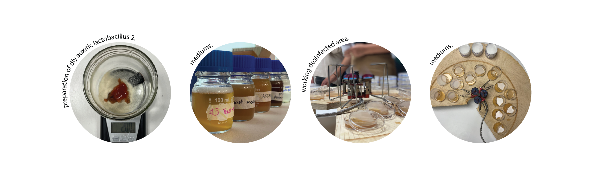
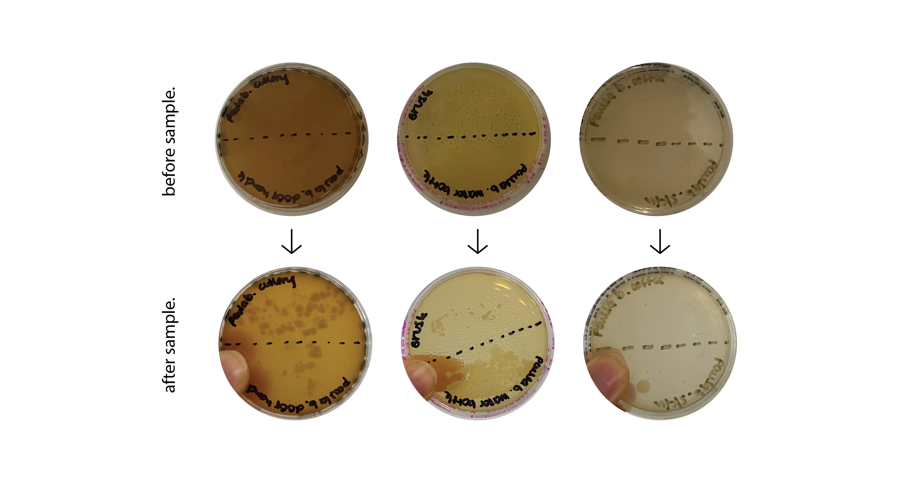
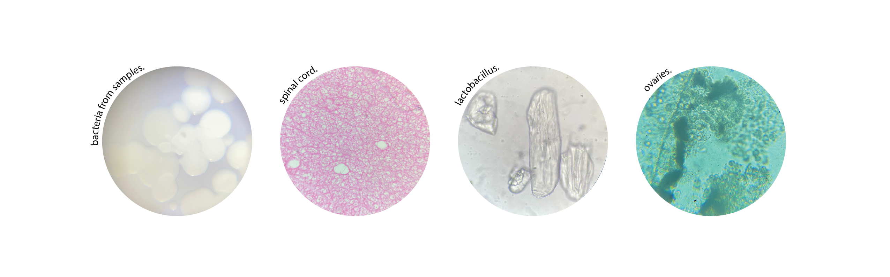

Week 1. Introduction
During this first week we got to know each other and the master's program. We learned about our own personal present skills and the future ones we want to obtain as well as our classmate's ones.
Read More
October 22, 2021
So our first hands on activity was with spirulina and kombucha. Spirulina is a cyanobacteria containing lots of nutrients like Vitamin B, E, antioxidants, chlorophyll, minerals, among many others. It's now become a popular superfood due to its properties. Kombucha is the result of the fermentation of sugar and black tea with the SCOBY (culture of bacteria and yeast). We first stirred the spirulina but not too much to get it agitated (we used a timer to get it done more properly). Then we used a cloth to filter some spirulina and get the sample for the observation in the microscope.
We continued talking about microbiology which studies all of this microscopic organisms. For this, we prepared mediums for analyzing our bacteria like lactobacillus, and yeast. We set the working area with the bunsen burner to make sure there is no bacteria around our samples. Then we put them in The fridge for them to set. The next day we grabbed some bacteria from our surroundings in order to see if it would show in our samples.
I analyzed some cutlery i had with me, the classroom door handle, my hair brush, the lid of my water bottle and for the lactobacillus one I put my skin and coffee.
After doing our samples we also analyzed some other samples like spinal cord, lactobacillus, ovaries, fish and others. I find it amazing what you can see fromw the microscope, it's a whole other world in a microlevel. Personally I don't feel very acquainted with a lot of terms but I find it very interesting and this week of review of general concepts definitely helped me understand better or at least refresh my mind about this topic.

15 january 2015 At 10:30 pm
Ne erat velit invidunt his. Eum in dicta veniam interesset, harum fuisset te nam ea cu lupta definitionem.
Reply
15 january 2015 At 10:30 pm
Ne erat velit invidunt his. Eum in dicta veniam interesset, harum fuisset te nam ea cu lupta definitionem.
Reply
15 january 2015 At 10:30 pm
Ne erat velit invidunt his. Eum in dicta veniam interesset, harum fuisset te nam ea cu lupta definitionem.
Reply
During this first week we got to know each other and the master's program. We learned about our own personal present skills and the future ones we want to obtain as well as our classmate's ones.
Read More
This second week we had the Atlas of Weak Signals course, which analyzes emerging issues that can be assessed and in which way they can be approached. This included a trip to Collserolla.
Read MoreAgriculture Zero was a glimpse of what the agriculture world is. We went from the basics to the deeps like analyzing soil.
Read More